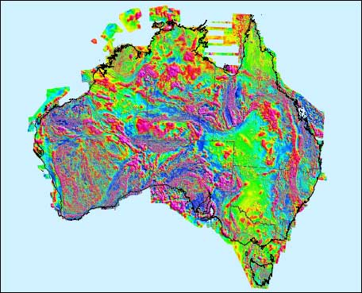
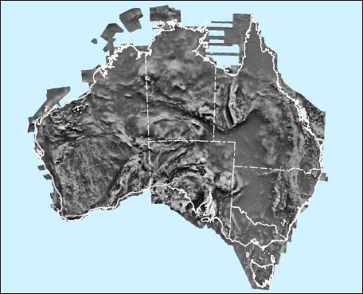
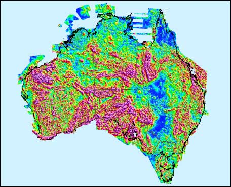
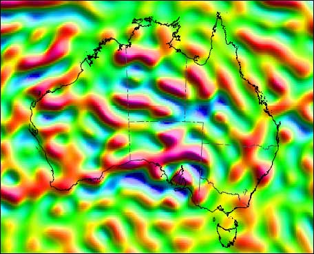
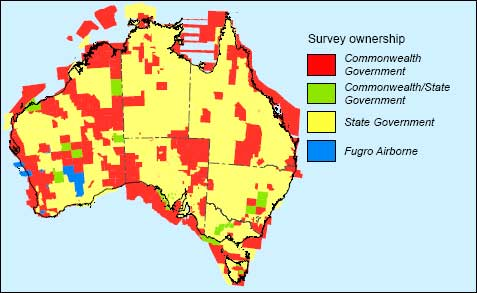
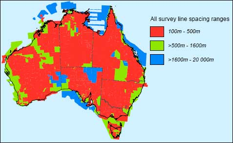
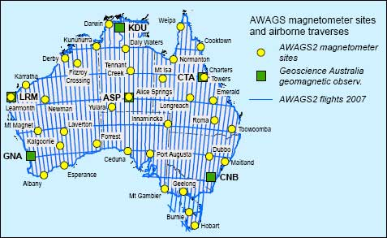
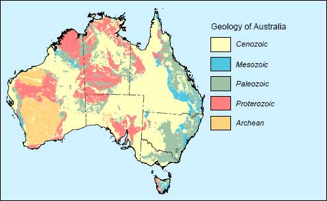
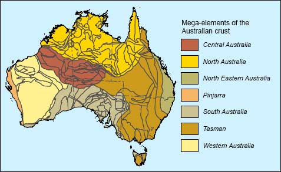

PREFACE:
This edition of the Magnetic Anomaly Map of Australia includes an additional 115 individual survey grids since the fourth edition was published in 2004 (Milligan and Franklin, 2004). New independent airborne total-field magnetic data acquired in 2007 during a continental calibration survey flown as part of the Australian Government’s Onshore Energy Security Program have been used to increase the accuracy of intermediate wavelengths. The method of matching the individual survey grids has also been updated. 795 individual grids have been matched and merged into the composite used to produce this image, with the resolution of each grid optimal for the specifications of the source survey line data. These grids include data from many new surveys, acquired mainly by the State and Territory geological surveys. It is estimated that 27 million line-kilometres of survey data were acquired to produce the grid data, 8 million line-kilometres more than for the fourth edition.
EXPLANATORY NOTES:
This image was compiled from Total Magnetic Intensity survey data held in the National Airborne Geophysical Database by Geoscience Australia. The image is a composite of data acquired from surveys flown by Geoscience Australia and surveys flown under contract to Geoscience Australia, the State and Territory geological surveys in either separate or joint projects and the private sector. The source data are used with their permission. The data from these surveys were acquired at a range of line spacing’s (see source diagrams), flying heights, and measurement accuracies (Percival, 2010).
The data supplied by the New South Wales Department of Industry and Investment; Department of Resources, Minerals and Energy Northern Territory; Queensland Department of Mines and Energy; Department of Primary Industries and Resources South Australia; Department of Infrastructure, Energy and Resources Tasmania; Department of Primary Industries Victoria and Department of Mines and Petroleum Western Australia (see source diagram) were acquired at an altitude of 100 m or less along lines spaced 500 m apart or less.
For each survey, the International Geomagnetic Reference Field for the relevant epoch was removed, and a grid created with a cell size of approximately one fifth of the line spacing, using the minimum curvature method of Briggs (1974). Some grids were subjected to micro-levelling (Minty, 1991). The gridded data from all the surveys were joined together using a two-stage method, based on the data differences in the overlap regions between adjacent surveys. Initially, a base-shift was applied to each survey to minimise the global set of differences between adjacent surveys. An iterative process was then applied, removing a plane surface from selected surveys to minimise the differences between it and its neighbours. During this iterative process, the base levels of those grids that overlapped with an independent dataset, the Australia-wide Airborne Geophysical Survey (AWAGS) were constrained by the AWAGS data to increase the accuracy of the intermediate wavelength information (Milligan et al., 2009; Minty et al., 2003). Remaining high-frequency differences between the grids were smoothed out using a convolution operator. The final grid was created by interpolating all of the data into one grid, with a cell size of 3 seconds of arc (approximately 80 m), which was then reprojected to the Lambert Conformal Conic Projection with a cell size of 250 m.
The image was generated from the natural colour palette (magenta high–blue low) using histogram equalisation. To emphasize the expression of short-wavelength anomalies, an artificial illumination was applied from the northeast. The output of the sun-angle image was used to modulate colour intensity and saturation of the initial colour image in the Hue, Saturation, Value colour space (Milligan et al., 1992).
Three of the small images below represent example transformations of the composite grid; the transformed data are available from Geoscience Australia. Also shown is an image of an improved lithospheric magnetic field model to degree 120 (~333 km) at the Earth’s surface derived from the MF6 CHAMP satellite (Maus et al., 2007).
 |
 Greyscale image of Total Magnetic Intensity |
|  Analytic Signal of Total Magenetic Intensity upward-continued 5km |
 Total Magnetic Intensity at Earth's surface derived from MF6 satellite data |
REFERENCES:
Briggs, I.C., 1974. Machine contouring using minimum curvature: Geophysics, 39, 39-48.
Maus, S., Manoj, C., Yin, F., Rother, M., Rauberg, J., Michaelis, I., Stolle, C. and Lühr, H., 2007. Sixth generation lithospheric.
Milligan, P.R., Minty, B.R.S., Richardson, M. and Franklin, R., 2009. The Australia-wide Airborne Geophysical Survey – accurate.
Milligan, P.R., Morse, M.P. and Rajagopalan, S., 1992. Pixel map preparation using the HSV colour model: Exploration.
Milligan, P.R. and Franklin, R., 2004. Magnetic Anomaly Map of Australia (Fourth Edition),
1:5 000 000 scale: Geoscience.
Minty, B.R.S., 1991. Simple micro-levelling for aeromagnetic data: Exploration Geophysics, 22, 591-592.
Minty, B.R.S., Milligan, P.R., Luyendyk, T. and Mackey, T., 2003. Merging airborne magnetic surveys into continental-scale.
Percival, P.J., 2010. Index of airborne geophysical surveys, (Eleventh Edition): Geoscience Australia Record 2010/13.
We thank Fugro Airborne Surveys Pty Ltd for allowing the inclusion of some proprietary data.
Compiled by the Continental Geophysics Project, Geoscience Australia.
Image enhancement by P.R. Milligan.
Index maps by L.M. Richardson.
Cartography by Silvio Mezzomo, Geospatial Applications and Visualisation Project, Geoscience Australia.
It is recommended that this map be referred to as:
Milligan, P.R., Franklin, R., Minty, B.R.S., Richardson, L.M. and Percival, P.J., 2010. Magnetic Anomaly Map of Australia.
Composite TMI grid data at 250 m cell size are available for free download via the internet by using the Geoscience Portal to access the Geophysical Archive Data Delivery System (GADDS) at: http://www.geoscience.gov.au/gadds
Further information can also be found on the Internet at: http://www.ga.gov.au
Published by Geoscience Australia, Department of Resources, Energy and Tourism, Canberra, Australia. Issued under the authority of the Federal Minister for Resources, Energy and Tourism.
© Commonwealth of Australia (Geoscience Australia) 2010.
This material is released under the Creative Commons Attribution 3.0 Australia Licence.http://creativecommons.org/licenses/by/3.0/au/
Copies of this map may be downloaded from the
Geoscience Australia internet site at:
http://www.ga.gov.au/resources/maps/mapsofaustralia.jsp
or by contacting:
Sales Centre, Geoscience Australia
Cnr Hindmarsh Dr and Jerrabomberra Ave, Symonston, ACT
GPO Box 378, Canberra, ACT 2601
Phone: (02) 6249 9966 Facsimile: (02) 6249 9960
Email: sales@ga.gov.au
SOURCE DIAGRAMS:
|
 |
|  |  |
|  |
 |